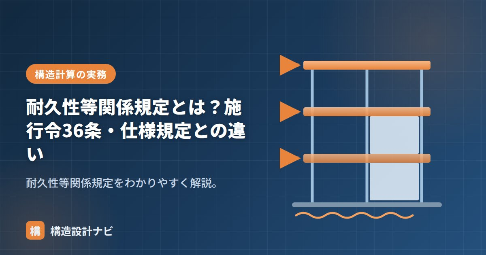

耐久性等関係規定とは？施行令36条・仕様規定との違い

耐久性等関係規定とは、構造計算で安全性を確かめる場合でも、必ず守らなければならない仕様規定の一群のことです。建築基準法施行令第36条に位置づけられており、どれほど高度な構造計算を行っても、これらの規定は免除されません。構造計算による安全性の確認と、仕様規定による耐久性の確保は、いわば役割の違う2つのチェックだと理解すると全体像がつかみやすくなります。
- 耐久性等関係規定は施行令36条に定められ、構造計算をしても適用が外れない仕様規定。
- かぶり厚さやコンクリート強度、防腐防錆対策、基礎の仕様など「長持ちさせるための最低限のルール」が中心。
- 強度計算で確かめられるのは「力に耐えられるか」であり、「劣化に耐えられるか」は計算では担保できないため仕様で守らせる。
施行令36条との関係
施行令36条は、構造方法に関する技術的基準（仕様規定）のうち、どの計算ルートでも適用される基本的な規定＝耐久性等関係規定を定めています。ルート2・3のように高度な計算をしても、これらは適用が外れません。構造計算によって安全性を検証するさまざまな「計算ルート」がありますが、耐久性等関係規定はどのルートを選んでも共通して適用される、いわば土台となる規定です。
耐久性等関係規定の例
- RC造のかぶり厚さ・コンクリートの設計基準強度。
- 木材・鉄骨の腐食・腐朽・さびへの対策。
- 基礎の構造、土台の緊結などの基本的な仕様。
- 木造の柱の小径や、壁を貫通する配管まわりの防腐措置など。
なぜ計算では代替できないのか
構造計算は、地震力や積載荷重に対して部材が壊れないかを、力のつり合いという形で数値的に検証するものです。これに対して、コンクリートの中性化や鉄筋のさび、木材の腐朽・シロアリ被害といった時間とともに進行する劣化現象は、力のつり合いの計算だけでは表現しきれません。かぶり厚さを確保する、防腐処理をするといった仕様上のルールを最初から守らせることで、計算では捉えにくい劣化のリスクに対応しているのが、耐久性等関係規定の考え方です。
仕様規定との違い
一般の仕様規定には、構造計算で安全性を確かめれば適用しなくてよい（計算で代替できる）ものがあります。これに対し耐久性等関係規定は、計算をしても必ず守る「最低限のルール」です。強度（力）の問題は計算で確かめられても、耐久性（長持ち）は計算だけでは担保できないため、仕様で確実に守らせる考え方です。
「構造計算で安全性を確認しているから仕様規定は関係ない」と誤解されることがありますが、耐久性等関係規定はその例外にあたります。ルート3のような高度な計算を行った建物であっても、かぶり厚さの不足や防腐措置の省略は認められません。確認申請の審査でも、構造計算の内容だけでなく、耐久性等関係規定を満たしているかどうかが別途チェックされる点に注意が必要です。
適判の指摘で、ルート3の高度な計算をしていてもかぶり厚さの不足を理由に差し戻された案件に立ち会ったことがある。耐久性等関係規定は計算の出来不出来と関係なく審査されるため、構造計算の精緻さに気を取られて仕様面の確認を後回しにしないよう自分に言い聞かせている。
「仕様規定」「構造強度」「許容応力度計算（計算ルート）」「耐久設計基準強度」をどうぞ。
仕様規定の中での位置づけ（図解）
耐久性等関係規定の主な内容
| 条文 | 内容 | 何を防ぐか |
|---|---|---|
| 令36条1項 | 耐久性等関係規定の定義（どの条文が該当するか） | — |
| 令37条 | 構造部材の耐久（腐食・腐朽・摩損しにくい材料） | 材料そのものの劣化 |
| 令38条 | 基礎（地盤に応じた形式、鉄筋コンクリート造の布基礎等） | 不同沈下・基礎の破壊 |
| 令39条 | 屋根ふき材等の緊結 | 台風での飛散 |
| 令41条 | 木材の品質（節・腐れ・繊維の傾斜等の欠点がないこと） | 強度不足 |
| 令49条 | 木造の外壁内部の防腐措置、地面から1m以内の防腐・防蟻 | 腐朽・シロアリ |
| 令70条 | 鉄骨造の柱の防火被覆（一定条件下） | 火災時の急激な耐力低下 |
| 令72条 | コンクリートの材料（塩化物量等） | 鉄筋の腐食 |
| 令74条 | コンクリートの強度 | 強度不足 |
| 令75条 | コンクリートの養生 | 強度発現不良・ひび割れ |
| 令79条 | 鉄筋のかぶり厚さ | 鉄筋の腐食（中性化） |
なぜ計算では代替できないのか
| 構造計算でわかること | 耐久性の規定が守ること |
|---|---|
| 竣工時点の力のつり合い | 10年後・30年後の状態 |
| 設計した断面の強度 | 断面が減らないこと（腐食・腐朽で痩せない） |
| 材料の設計基準強度 | 実際にその強度が発現し、保たれること |
| 想定した荷重への抵抗 | 想定外の劣化が進まないこと |
表を見比べると違いが明確です。構造計算は「設計時に仮定した状態が保たれている」ことを前提に成り立っています。その前提が崩れる原因——鉄筋が錆びて断面が減る、土台が腐って支持力を失う、コンクリートが中性化して鉄筋を守れなくなる——を防ぐのが耐久性等関係規定なのです。つまり構造計算の土台を支えている規定だといえます。
小規模な木造建築物（いわゆる4号建築物）では構造計算が省略できる場合がありますが、耐久性等関係規定は必ず適用されます。地面から1m以内の防腐・防蟻措置、基礎の形式、木材の品質——これらは規模にかかわらず守らなければなりません。
実際、既存木造住宅の劣化事例で最も多いのは、構造計算の不備ではなく土台・柱脚の腐朽とシロアリ被害です。床下換気の不足、外壁からの雨水浸入、給排水管の漏水——原因はさまざまですが、いずれも「時間の経過」が効いています。耐久性等関係規定が計算による代替を認めていないのは、この実態を反映したものです。
よくある質問
Q1. 耐久性等関係規定は構造計算で省略できますか？
できません。防腐・防蟻措置、コンクリートのかぶり厚さ、基礎の形式などは、どれだけ高度な構造計算を行っても省略が認められていません。構造計算は竣工時点の力のつり合いを確かめるもので、時間とともに進む劣化を確認できないためです。
Q2. 4号建築物でも耐久性等関係規定は適用されますか？
適用されます。小規模な木造建築物で構造計算が省略できる場合でも、地面から1m以内の防腐・防蟻措置、基礎の形式、木材の品質といった耐久性等関係規定は規模にかかわらず守る必要があります。
Q3. 耐久性等関係規定にはどんな条文が含まれますか？
施行令36条1項で列挙されており、37条（構造部材の耐久）、38条（基礎）、39条（屋根ふき材等の緊結）、41条（木材の品質）、49条（木造の防腐・防蟻）、72条・74条・75条（コンクリートの材料・強度・養生）、79条（かぶり厚さ）などが該当します。
まとめ
- 耐久性等関係規定は、計算をしても必ず守る仕様規定（施行令36条）。
- かぶり厚さ・コンクリート強度・防腐防錆・基礎などが該当。
- 劣化現象は構造計算だけでは担保できないため、仕様で確実に守らせる考え方。
- どの計算ルートを選んでも適用が外れない、いわば構造安全性の土台となる規定。